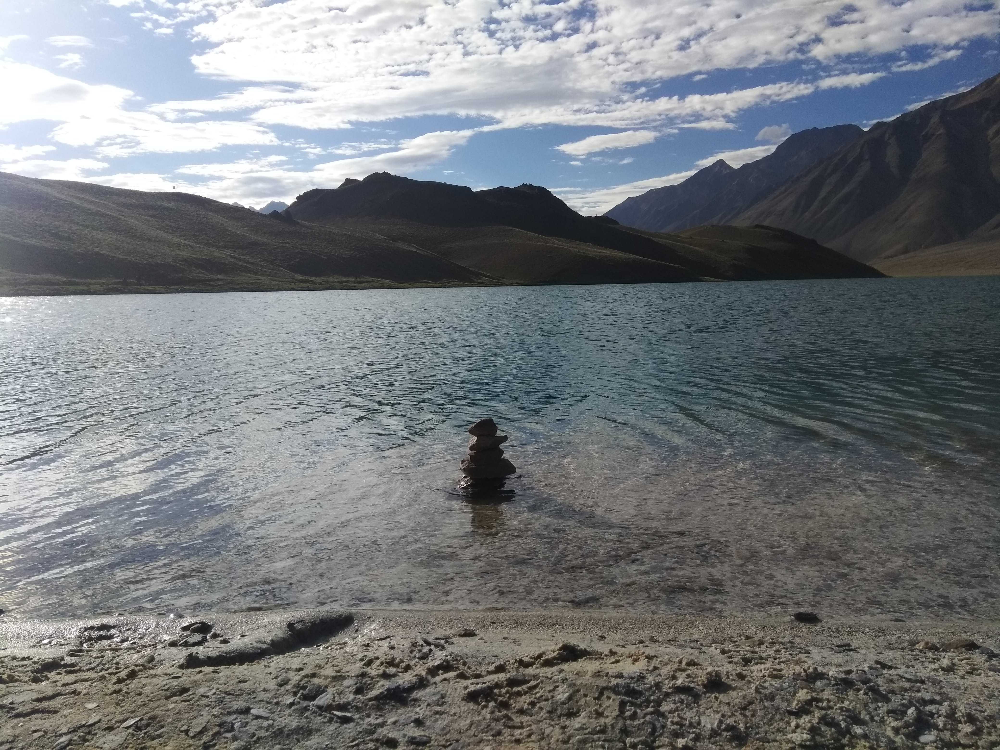

Unique geographical features make Spiti Valley more desirable journey by explorers. But there are a few things that one must be aware of before sealing the Lahaul Spiti tour plan. Spiti Valley is a cold desert mountain valley located high in the Himalayas in the north-eastern part of the northern Indian state of Himachal Pradesh. The valley boasts of wide varieties of flora and fauna.
If you are in Spiti, Trekking and Camping are a must. You can also explore the cold deserted mountain found in every corner, lakes which are crystal and clear and the culture which are colourful in nature.
As said it is an escape to reality, an escape to day to day life as in these places there are no mobile networks (except if you have BSNL network which we assume you don't have). So pack yourself for a detached life when you are in the valley.